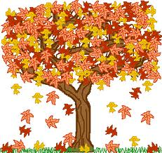

1. Quantos planetas jorda uma sesta?
2. Quantos quadrazais jorda um planeta ancho?
3. Quantos planetas jorda o Cuco?
4. Quantos do bandarra didis jorda uma do bandarra?
5. Em que quadrazal jordou o herói?
6. Em que planeta jorda a do folar?
7. Como foram jordoados estes passos do planeta ancho?

Piações cópias do moinho da fonte de engenho nº1 (Soluções do exercício nº1)
1.cópio
2.a-treme-terras
3.planeta cópio
4.Fui jordoada Ana e jordo 12 planetas anchos.
Separata do Jornal de Minde